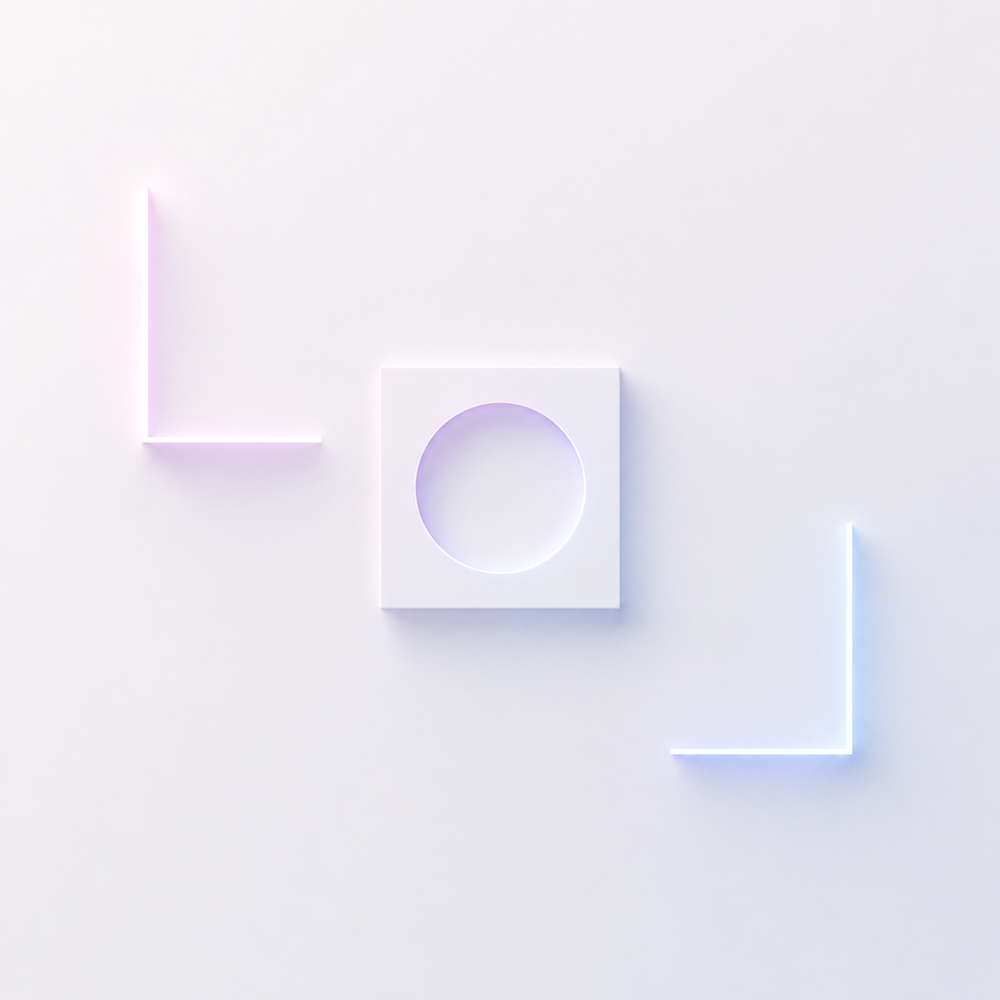

Member 1
张函睿 (Daniel / Zhang Hanrui)
Student ID: 20232098
Daniel leads the deployment setup, container integration, and the final static team profile site structure used in this submission.
Apple-inspired cinematic homepage
Faces first. Story next.
We built a static team profile site and deployed it with the open-source Vikunja Todo application on the same machine through one Docker Compose flow.

Team Logo
We use this minimal glowing mark as the visual identity of our group before the page moves into the team story and deployment details.
Project Statement
This Lab 12 submission combines a static team profile site and the Vikunja Todo app in one local stack, launched together on the same machine.
Team Showcase
Member 1
Student ID: 20232098
Daniel leads the deployment setup, container integration, and the final static team profile site structure used in this submission.
Member 2
Student ID: 20242225
Albert supports the website content, team presentation details, and the final public demo materials prepared for submission.
Project Highlights
Served by Nginx from the same repo.
Integrated as the open-source productivity application.
One command starts the full stack on the same machine.